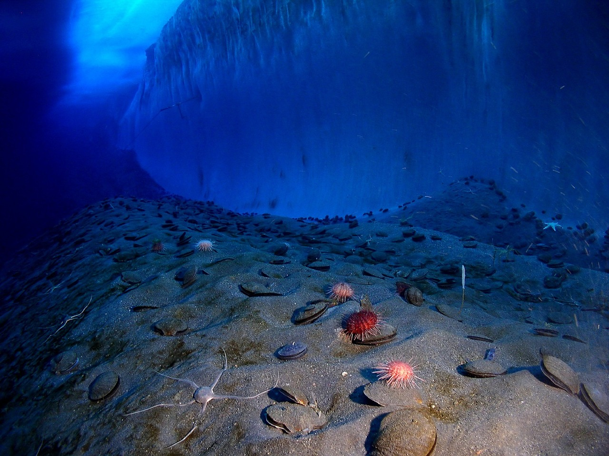
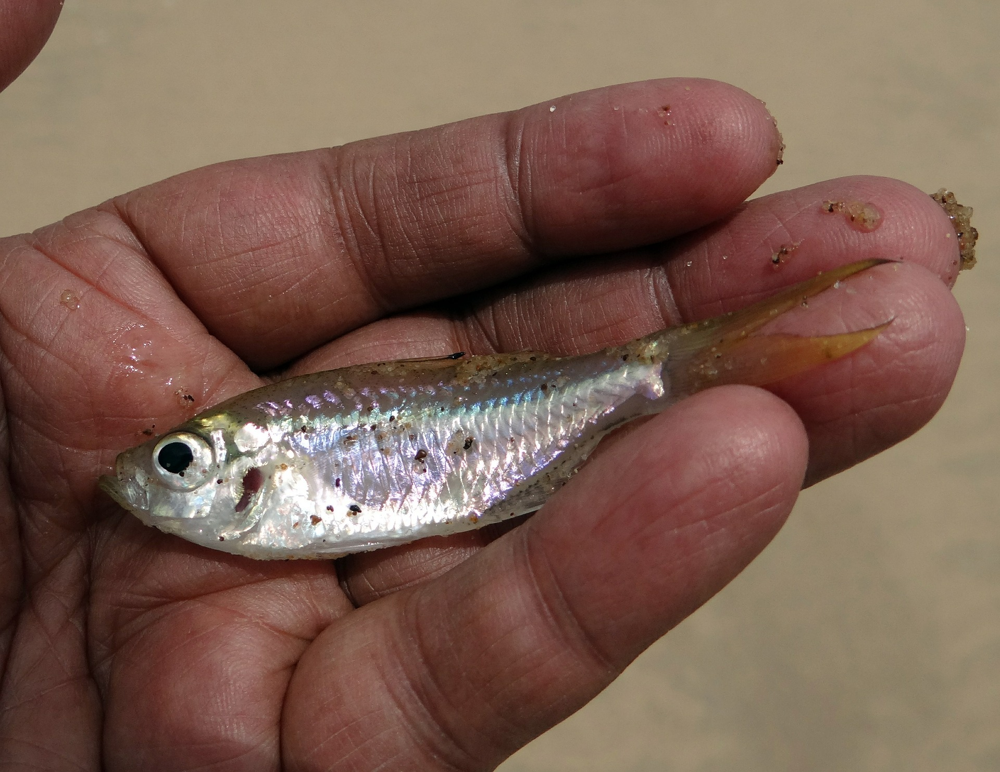
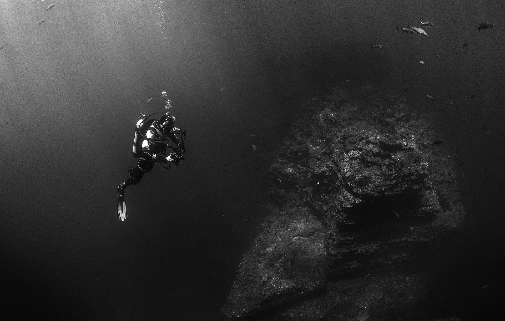
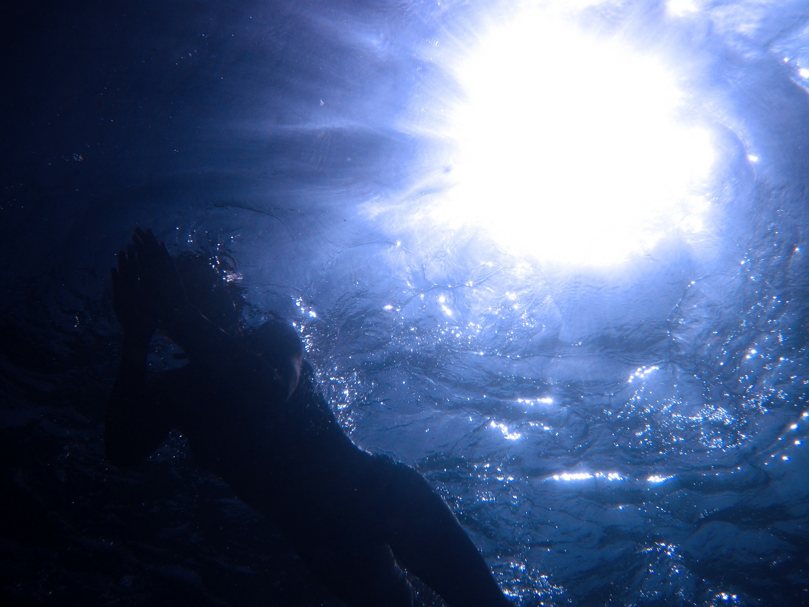

Recent Shows
Big Blowout
Aired: February 4, 2018
As the last Ice Age came to an end, big bubbles of gas on the floor of the Barents Sea popped like champagne corks.
That left hundreds of craters -- some of them up to two-thirds of a mile across.
Listen to Podcast

Warmer and Smaller
Aired: January 28, 2018
Big fish that move fast could lose a bit of their swagger in the coming decades. Warmer ocean waters will provide less oxygen,
which could reduce the maximum size of some species of fish -- especially those that are the most active.
Listen to Podcast

Musical Mountains
Aired: January 21, 2018
In the summer of 2017, a research expedition took a good look at a string of underwater mountains north of Hawaii.
Scientists used sonar to map the volcanic mountains, known as seamounts, which formed tens of millions of years ago.
Listen to Podcast
Recent Articles

Sea Snakes Go Black in City
Posted: February 1, 2018
Most turtle-headed sea snakes throughout the Indian and Pacific Oceans have black-and-white banded bodies—unless
they swim in city waters.
Read More

The Faceless Fish of the Deep, Deep Sea
Posted: January 1, 2018
They didn’t know what they would find when they set off for a month at sea on May 15, 2017. But when 40 scientists
returned from trawling the deepest waters off the coast of Australia, they had a haul that would make Charles Darwin...
Read More

Clownfish Need Healthy Anemones
Posted: December 1, 2017
Nemo may have been interested in exploring the great big ocean, but his dad Marlin’s attachment to their anemone is the
norm for real clownfish. Sea anemones protect clownfish—and the eggs clownfish lay at the anemone’s base—against predators...
Read More